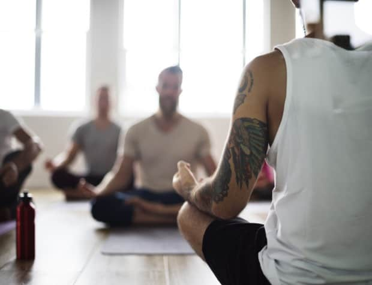
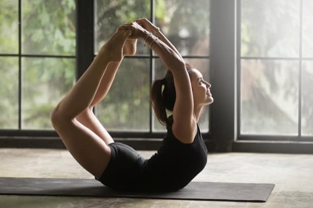
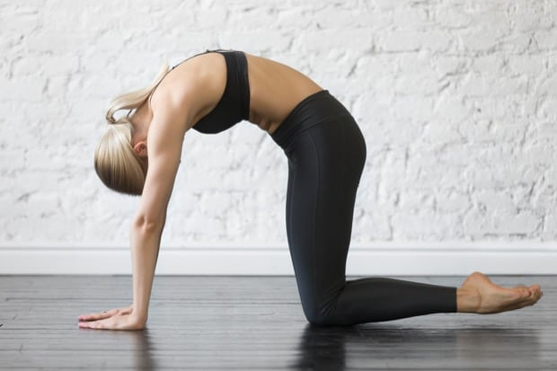
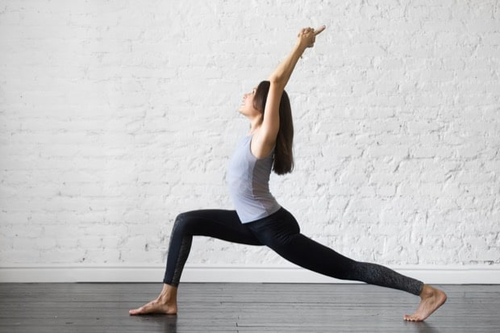

How about some exercises to ease back pain? Back pain is a common issue which affects many of us on a daily basis. A lack of exercise, bad posture and spending too long sat at a desk are all factors which can cause us to be in pain. Many people use back pain as a reason to avoid exercise, when in fact it could be just the thing to help you.
Whilst running a marathon or a heavy weightlifting session could aggravate back conditions, other types of exercise can help restore balance and mobility, as well as make your back stronger. Pilates and/or yoga is one of these exercises, and there are some great poses to ease back pain which can be done in your living room with no special equipment. If Yoga or Pilates exercises are not your thing or you are just starting out, why not try our 10 Easy Exercises for Burning Calories.
1. THE BUTTERFLY
Ideal for when you’re sat at home and need a bit of chill time and requires very little effort. Simply sit on the floor (preferably on a mat) with your knees bent, back straight and your hands at your side. Move your feet together and allow your knees to flop out to the side. Work the muscles in your legs so that your knees move closer to the floor. You can also bring your feet in closer to your body for a deeper stretch.
2. HAPPY BABY POSE
This pose is very relaxing – it’s no wonder babies do this as they begin to move and roll around! Lie on the floor and bring your knees up to your chest. Grab your feet and bring your knees apart so that they are further than shoulder-width. Be sure to keep your back against the floor and create some tension by pressing your feet firmly into your hands.
3. THE HALF PIGEON
This pose will also help you to strengthen your leg muscles, as well as your back. Begin in a lunge position, with your right front in front of you and your hands either side of it. Using your hands to shoulder the weight, slowly slide your foot so that it meets your left hand, whilst your knee meets your left hand. Repeat with the left foot.
4. THE FULL PIGEON
To do the full pigeon, you should sit up straight on the floor rather than a lunge. Cross your left leg over and out in front of you. Grab your left ankle and pull it over to your right knee, laying it on top. As you stretch, you’ll be able to open your hips out more so that your knee moves closer to the floor. Return to the starting position and repeat on the other side.
5. BOW POSE
Lie on your front on the floor with your arms at your sides. Take your arms back and grab your feet, pulling your legs up off the floor and towards your back. Extend the tailbone back and away to avoid compressing the low back and relax shoulders away from ears breathing into the chest fully. This is a great stretch that will become easier over time, a great way to practice some balancing techniques.
6. CAT POSE
Begin on your hands and knees on the floor. Position your knees so that they are under your hips, with shoulders, elbows and hips parallel to the floor. Whilst keeping your head facing the floor, round your spine upwards towards the ceiling, lowering your head further towards the floor (stop before your chin touches your chest).
7. COW POSE
The cow counteracts the Cat position and is another good post for backache. Begin on your hands and knees again, but this time raise your chest and sitting bones upwards to the ceiling, sinking your belly towards the floor. Stare straight in front of you, returning to the neutral position.
8. THE LOW LUNGE
Another lunge position – start in a lunge on your mat with your right foot in front of you. Place your hands either side of your right foot. Bring your left knee to the floor and slowly lift your arms into the air, keeping your back straight. Return to the starting position and switch legs.
9. THE CRESCENT LUNGE
As with the Low Lunge, start in the lunge position, but keeping your knees off the floor with your right foot in front of you. Move your hands from the floor to the front of your thigh, then raise overhead. Lengthen the back leg, squaring your hips and sinking into the lunge for a deeper stretch. Return to the lunge and repeat with the other leg.
10. LEGS UP THE WALL POSE
A nice one to end on, start by lying down, sitting sideways with your right side against it. Swing your legs up onto the wall, keeping your head and shoulders lightly above the ground. You don’t need to be right against the wall, but the more flexible you get, the closer you can move. You should be gently arched rather than keeping your torso flat. Bring your feet down so that your knees are bent, lift your pelvis up to shuffle closer to the wall, then lower again. Once you’re comfortable, stay in this pose for around 10 minutes, taking the time to relax and meditate.
The right yoga and pilates poses can really help you to ease back pain, relax your back and make it stronger. Aim to repeat the poses 5-10 times to truly feel their benefit. The relaxation element of the workout can also help with stress, trouble sleeping and boosting your energy levels, so a yoga workout is ideal for starting off the day or to do before bed in the evening. As with any exercise, if you’re unsure of how it could affect your injury, speak to your GP first. If you are enjoying doing yoga at home, why not consider joining a Yoga Class or group local to you.
LEAVE A REPLY
Your email address will not be published. Required fields are marked *